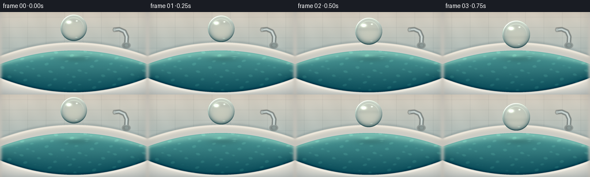
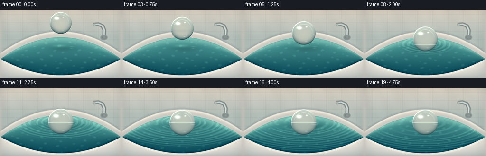
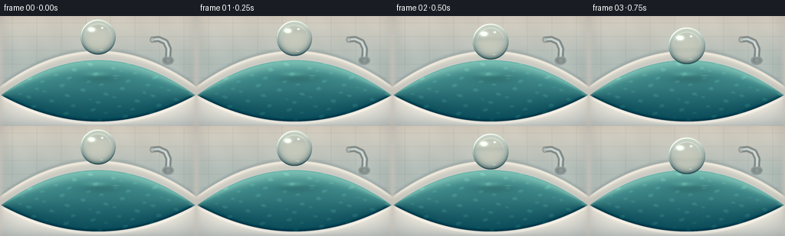
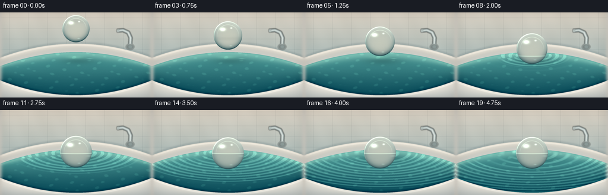
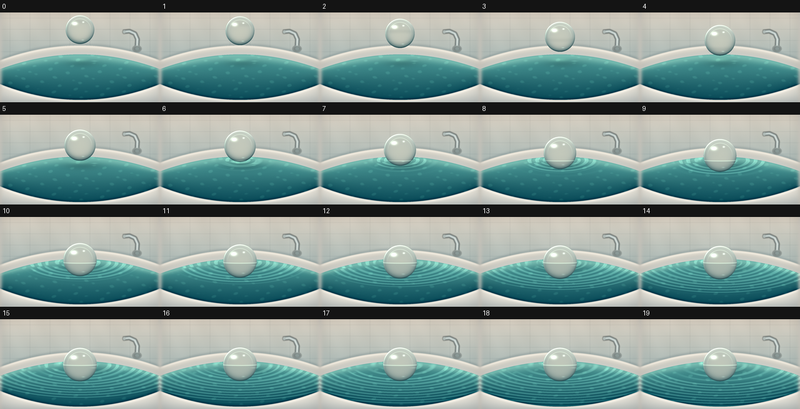
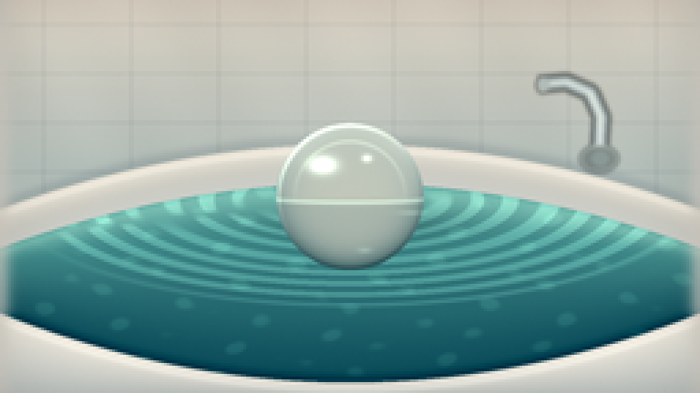
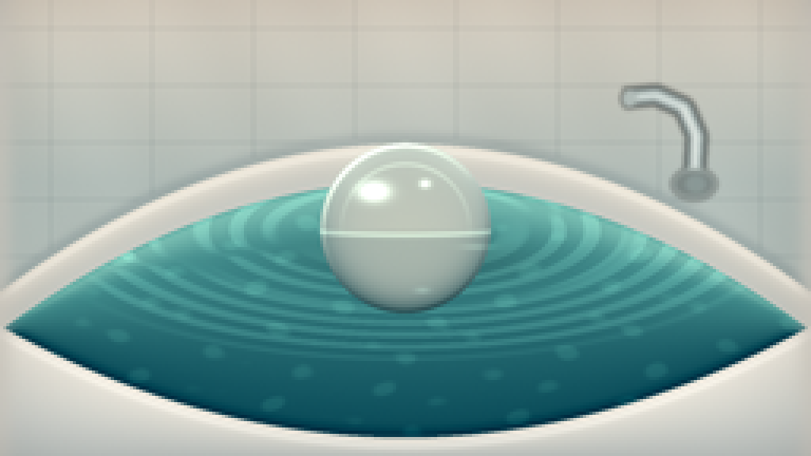

CODING AGENTS AS PIXEL WORLD MODELS
traex/DeepSeek-V4.1-Flash · phygen_010
点击播放 · 原生 RGB 像素
逐轮保存的候选
回放视频、检查图与代码变化。
每份候选均可单独播放。实际图片检查记录在下方工具轨迹中。
候选 01播放与检查图
点击播放 · 原生 RGB 像素


展开代码变化
--- 上一保存版本
+++ 本次保存版本
@@ -0,0 +1,354 @@
+from pathlib import Path
+
+import numpy as np
+from PIL import Image, ImageDraw, ImageFilter
+
+from artifact_io import save
+
+
+WIDTH = 256
+HEIGHT = 144
+FPS = 4
+N_FRAMES = 20
+SUPERSAMPLE = 4
+
+RW = WIDTH * SUPERSAMPLE
+RH = HEIGHT * SUPERSAMPLE
+
+
+def mix(a, b, t):
+ a = np.asarray(a, dtype=np.float32)
+ b = np.asarray(b, dtype=np.float32)
+ t = np.asarray(t, dtype=np.float32)
+ if t.ndim == 2:
+ t = t[..., None]
+ return a * (1.0 - t) + b * t
+
+
+def smoothstep(edge0, edge1, value):
+ t = np.clip((value - edge0) / (edge1 - edge0), 0.0, 1.0)
+ return t * t * (3.0 - 2.0 * t)
+
+
+def blur_rgb(image, radius):
+ return np.asarray(
+ Image.fromarray(np.clip(image, 0, 255).astype(np.uint8)).filter(
+ ImageFilter.GaussianBlur(radius)
+ ),
+ dtype=np.float32,
+ )
+
+
+def bilinear_sample(image, xs, ys):
+ xs = np.clip(xs, 0.0, RW - 1.001)
+ ys = np.clip(ys, 0.0, RH - 1.001)
+ x0 = xs.astype(np.int32)
+ y0 = ys.astype(np.int32)
+ x1 = np.minimum(x0 + 1, RW - 1)
+ y1 = np.minimum(y0 + 1, RH - 1)
+ fx = xs - x0
+ fy = ys - y0
+ if image.ndim == 2:
+ fx = fx
+ fy = fy
+ top = image[y0, x0] * (1.0 - fx) + image[y0, x1] * fx
+ bottom = image[y1, x0] * (1.0 - fx) + image[y1, x1] * fx
+ return top * (1.0 - fy) + bottom * fy
+ fx = fx[..., None]
+ fy = fy[..., None]
+ top = image[y0, x0] * (1.0 - fx) + image[y0, x1] * fx
+ bottom = image[y1, x0] * (1.0 - fx) + image[y1, x1] * fx
+ return top * (1.0 - fy) + bottom * fy
+
+
+def draw_faucet(base):
+ layer = Image.new("RGBA", (RW, RH), (0, 0, 0, 0))
+ draw = ImageDraw.Draw(layer)
+ s = SUPERSAMPLE
+
+ def p(x, y):
+ return (round(x * s), round(y * s))
+
+ points = [p(219, 58), p(220, 43), p(216, 34), p(207, 30), p(197, 31)]
+ draw.line(points, fill=(45, 54, 56, 150), width=7 * s, joint="curve")
+ draw.line(points, fill=(151, 165, 164, 235), width=5 * s, joint="curve")
+ draw.line(points, fill=(221, 232, 229, 210), width=2 * s, joint="curve")
+ draw.line([p(219, 57), p(219, 42), p(215, 34)], fill=(245, 249, 244, 185), width=1 * s)
+
+ draw.ellipse(
+ (212 * s, 53 * s, 226 * s, 63 * s),
+ fill=(70, 80, 80, 130),
+ outline=(180, 193, 189, 200),
+ width=1 * s,
+ )
+ draw.ellipse((216 * s, 55 * s, 223 * s, 61 * s), fill=(120, 136, 135, 180))
+ draw.ellipse((196 * s, 28 * s, 201 * s, 34 * s), fill=(175, 187, 184, 220))
+ layer = layer.filter(ImageFilter.GaussianBlur(0.7 * s))
+ overlay = np.asarray(layer, dtype=np.float32) / 255.0
+ base[:] = base * (1.0 - overlay[..., 3:4]) + overlay[..., :3] * 255.0 * overlay[..., 3:4]
+
+
+def build_background():
+ x = (np.arange(RW, dtype=np.float32) + 0.5) / SUPERSAMPLE
+ y = (np.arange(RH, dtype=np.float32) + 0.5) / SUPERSAMPLE
+ xx = x[None, :]
+ yy = y[:, None]
+
+ back_curve = 67.0 + 0.00145 * (xx - 128.0) ** 2
+ front_curve = 140.5 - 0.00155 * (xx - 128.0) ** 2
+
+ wall_t = np.clip(yy / 63.0, 0.0, 1.0)
+ wall = mix((216, 208, 194), (179, 190, 185), np.broadcast_to(wall_t, (RH, RW)))
+ wall += (
+ np.sin(xx * 0.055 + yy * 0.026) * 2.0
+ + np.sin(xx * 0.17 - yy * 0.08) * 1.2
+ )[..., None]
+
+ wall_mask = (yy < back_curve - 14.5).astype(np.float32)
+ tile_x = np.minimum(np.mod(xx + 16.0, 32.0), 32.0 - np.mod(xx + 16.0, 32.0))
+ tile_y = np.minimum(np.mod(yy + 9.0, 18.0), 18.0 - np.mod(yy + 9.0, 18.0))
+ tile_lines = (
+ np.exp(-(tile_x / 0.55) ** 2) + np.exp(-(tile_y / 0.5) ** 2)
+ ) * wall_mask
+ wall -= tile_lines[..., None] * np.array((10.0, 9.0, 8.0), dtype=np.float32)
+
+ image = wall.copy()
+
+ rim_top = back_curve - 14.0
+ rim_mask = ((yy >= rim_top) & (yy <= back_curve + 0.7)).astype(np.float32)
+ rim_depth = np.clip((yy - rim_top) / 14.7, 0.0, 1.0)
+ porcelain = mix((231, 225, 213), (204, 207, 201), rim_depth)
+ porcelain += (np.exp(-((yy - rim_top - 2.2) / 1.1) ** 2) * 12.0)[..., None]
+ porcelain -= (np.exp(-((yy - rim_top - 8.0) / 5.0) ** 2) * 10.0)[..., None]
+ image = image * (1.0 - rim_mask[..., None]) + porcelain * rim_mask[..., None]
+
+ rim_outer_shadow = np.exp(-((yy - rim_top + 1.5) / 2.4) ** 2) * (yy < rim_top)
+ image -= rim_outer_shadow[..., None] * np.array((20.0, 18.0, 15.0), dtype=np.float32)
+
+ water_mask = ((yy >= back_curve + 0.2) & (yy <= front_curve - 0.4)).astype(np.float32)
+ water_v = np.clip((yy - back_curve) / (front_curve - back_curve), 0.0, 1.0)
+ water_t = water_v ** 0.72
+ water = mix((108, 181, 171), (8, 74, 88), water_t)
+ water = mix(water, (24, 111, 121), np.exp(-((water_v - 0.23) / 0.2) ** 2) * 0.18)
+
+ caustic_wave = (
+ np.sin(xx * 0.23 + 2.3 * np.sin(yy * 0.15))
+ + np.sin(yy * 0.53 - xx * 0.11)
+ + 0.65 * np.sin(xx * 0.39 + yy * 0.29)
+ )
+ caustic = smoothstep(1.2, 2.3, caustic_wave)
+ water += caustic[..., None] * np.array((12.0, 17.0, 13.0), dtype=np.float32)
+
+ water_glow = np.exp(-((water_v - 0.05) / 0.11) ** 2)
+ water += water_glow[..., None] * np.array((26.0, 22.0, 17.0), dtype=np.float32)
+ image = image * (1.0 - water_mask[..., None]) + water * water_mask[..., None]
+
+ back_edge = np.exp(-((yy - back_curve) / 1.15) ** 2) * water_mask
+ image -= back_edge[..., None] * np.array((26.0, 22.0, 18.0), dtype=np.float32)
+
+ front_mask = (yy >= front_curve).astype(np.float32)
+ front_depth = np.clip((yy - front_curve) / (HEIGHT - front_curve + 1.0), 0.0, 1.0)
+ front_porcelain = mix((233, 228, 218), (190, 196, 193), front_depth)
+ front_porcelain += (
+ np.exp(-((yy - front_curve - 2.4) / 1.3) ** 2) * 16.0
+ )[..., None]
+ image = image * (1.0 - front_mask[..., None]) + front_porcelain * front_mask[..., None]
+
+ front_shadow = np.exp(-((yy - front_curve + 1.2) / 2.1) ** 2) * water_mask
+ image -= front_shadow[..., None] * np.array((28.0, 23.0, 17.0), dtype=np.float32)
+
+ side = np.exp(-(np.minimum(xx, WIDTH - xx) / 4.0) ** 2)
+ image = mix(image, (211, 207, 198), side * 0.65)
+
+ draw_faucet(image)
+ return image, water_mask, back_curve, front_curve
+
+
+def ball_state(frame_index):
+ t = frame_index / FPS
+ contact_time = 1.5
+ settle_time = 3.25
+ if t < contact_time:
+ p = t / contact_time
+ p = p * p * (3.0 - 2.0 * p)
+ cy = 27.5 + 23.0 * p
+ radius = 23.0 + 2.2 * p
+ elif t < settle_time:
+ p = (t - contact_time) / (settle_time - contact_time)
+ p = 1.0 - (1.0 - p) ** 2
+ cy = 50.5 + 22.0 * p
+ radius = 25.2 + 1.8 * p
+ else:
+ tau = t - settle_time
+ cy = 72.5 + 1.15 * np.exp(-1.4 * tau) * np.sin(5.2 * tau)
+ radius = 27.0
+ return 128.0, float(cy), float(radius), t
+
+
+def render_frame(frame_index, background, water_mask, back_curve):
+ cx, cy, radius, t = ball_state(frame_index)
+ x = (np.arange(RW, dtype=np.float32) + 0.5) / SUPERSAMPLE
+ y = (np.arange(RH, dtype=np.float32) + 0.5) / SUPERSAMPLE
+ xx = x[None, :]
+ yy = y[:, None]
+
+ scene = background.copy()
+ waterline = 73.0
+ contact_time = 1.46
+ age = t - contact_time
+
+ if age > 0.0:
+ d = np.sqrt((xx - cx) ** 2 + ((yy - waterline) / 0.31) ** 2)
+ height = np.zeros((RH, RW), dtype=np.float32)
+ for delay, amplitude in ((0.0, 1.0), (0.72, 0.42), (1.45, 0.18)):
+ pulse_age = age - delay
+ if pulse_age <= 0.0:
+ continue
+ front = 9.0 + pulse_age * 57.0
+ width = 8.0 + pulse_age * 4.2
+ envelope = np.exp(-((d - front) / width) ** 2)
+ packet = envelope * np.cos((d - front) * 0.47)
+ trailing = (
+ np.exp(-np.maximum(d - front, 0.0) / (18.0 + pulse_age * 8.0))
+ * np.exp(-((d - 7.0) / (44.0 + pulse_age * 12.0)) ** 2)
+ * np.sin(d * 0.29 - pulse_age * 4.5)
+ * 0.22
+ )
+ decay = np.exp(-pulse_age * 0.21)
+ height += amplitude * decay * (packet + trailing)
+
+ gy, gx = np.gradient(height)
+ specular = np.clip(-(0.72 * gx + 0.66 * gy) * 180.0, 0.0, 1.0)
+ wave_color = (
+ height[..., None] * np.array((3.8, 6.2, 5.0), dtype=np.float32)
+ + specular[..., None] * np.array((30.0, 37.0, 31.0), dtype=np.float32)
+ )
+ scene += wave_color * water_mask[..., None]
+
+ crest = np.clip(height - 0.38, 0.0, 1.0) ** 1.6
+ scene += crest[..., None] * np.array((7.0, 10.0, 8.0), dtype=np.float32) * water_mask[..., None]
+
+ # A soft contact shadow and a concentrated transmitted-light caustic anchor the ball.
+ approach = smoothstep(0.0, 1.0, (t - 0.55) / 2.2)
+ shadow = np.exp(
+ -(
+ ((xx - cx - 4.5) / (radius * 1.25)) ** 2
+ + ((yy - waterline - 8.5) / (radius * 0.27)) ** 2
+ )
+ )
+ scene *= 1.0 - shadow[..., None] * (0.13 + 0.07 * approach) * water_mask[..., None]
+
+ caustic = np.exp(
+ -(
+ ((xx - cx + 1.5) / (radius * 0.58)) ** 2
+ + ((yy - waterline - 3.0) / (radius * 0.12)) ** 2
+ )
+ )
+ scene += caustic[..., None] * np.array((22.0, 28.0, 20.0), dtype=np.float32) * water_mask[..., None]
+
+ if age > 0.0:
+ meniscus_d = np.sqrt((xx - cx) ** 2 + ((yy - waterline) / 0.30) ** 2)
+ meniscus = np.exp(-((meniscus_d - 7.5) / 2.0) ** 2) * np.exp(-age * 0.08)
+ scene += meniscus[..., None] * np.array((13.0, 18.0, 15.0), dtype=np.float32) * water_mask[..., None]
+
+ # Refract the already-rendered bath through the glass sphere.
+ local_x = xx - cx
+ local_y = yy - cy
+ radial = np.sqrt(local_x * local_x + local_y * local_y)
+ inside = radial <= radius
+ u = local_x / radius
+ v = local_y / radius
+ rn = np.clip(radial / radius, 0.0, 1.0)
+ r2 = u * u + v * v
+
+ sx = cx - radius * (0.62 * u + 0.07 * u * r2)
+ sy = cy - radius * (0.62 * v + 0.07 * v * r2)
+ transmitted = bilinear_sample(scene, sx, sy)
+ transmitted = transmitted * 0.91 + np.array((3.0, 12.0, 11.0), dtype=np.float32)
+ transmitted += np.exp(-(r2 / 0.25))[..., None] * np.array((5.0, 4.0, 2.0), dtype=np.float32)
+
+ reflection_mix = np.broadcast_to(np.clip(0.58 - 0.62 * v, 0.0, 1.0), (RH, RW))
+ reflected = mix((23, 68, 76), (205, 217, 207), reflection_mix)
+ reflected += (
+ np.exp(-(((u + 0.42) / 0.35) ** 2 + ((v - 0.18) / 0.32) ** 2)) * 18.0
+ )[..., None]
+
+ fresnel = np.clip(0.035 + 0.92 * rn ** 5.2, 0.0, 0.96)
+ ball_color = transmitted * (1.0 - fresnel[..., None]) + reflected * fresnel[..., None]
+
+ rim = np.exp(-((rn - 0.966) / 0.027) ** 2)
+ rim_light = np.clip(-0.58 * u - 0.82 * v, 0.0, 1.0)
+ rim_dark = np.clip(0.52 * u + 0.77 * v, 0.0, 1.0)
+ ball_color += rim[..., None] * rim_light[..., None] * np.array((79.0, 84.0, 70.0), dtype=np.float32)
+ ball_color -= rim[..., None] * rim_dark[..., None] * np.array((18.0, 20.0, 19.0), dtype=np.float32)
+
+ inner_ring = np.exp(-((rn - 0.75) / 0.022) ** 2) * np.clip(-v + 0.16, 0.0, 1.0)
+ ball_color += inner_ring[..., None] * np.array((28.0, 34.0, 28.0), dtype=np.float32)
+
+ highlight_large = np.exp(
+ -(((u + 0.37) / 0.17) ** 2 + ((v + 0.43) / 0.105) ** 2)
+ )
+ highlight_small = np.exp(
+ -(((u - 0.23) / 0.060) ** 2 + ((v + 0.52) / 0.045) ** 2)
+ )
+ lower_glint = np.exp(
+ -(((u - 0.20) / 0.09) ** 2 + ((v - 0.73) / 0.035) ** 2)
+ )
+ ball_color += highlight_large[..., None] * np.array((132.0, 145.0, 133.0), dtype=np.float32)
+ ball_color += highlight_small[..., None] * np.array((93.0, 104.0, 95.0), dtype=np.float32)
+ ball_color += lower_glint[..., None] * np.array((26.0, 36.0, 32.0), dtype=np.float32)
+
+ submerged = smoothstep(waterline - 1.5, waterline + 3.0, yy)
+ water_behind = bilinear_sample(
+ scene,
+ xx + np.sin(yy * 0.55 + t * 5.0) * 0.8,
+ yy + np.cos(xx * 0.42 + t * 4.0) * 0.35,
+ )
+ underwater_tint = water_behind * 0.36 + np.array((14.0, 72.0, 79.0), dtype=np.float32) * 0.64
+ ball_color = mix(ball_color, underwater_tint, submerged * 0.20)
+
+ meniscus_y = waterline + 1.2 * np.sqrt(np.clip(1.0 - u * u, 0.0, 1.0))
+ meniscus_line = np.exp(-((yy - meniscus_y) / 0.75) ** 2)
+ ball_color += meniscus_line[..., None] * np.array((44.0, 53.0, 44.0), dtype=np.float32)
+
+ scene[inside] = ball_color[inside]
+
+ # Small reflected glints and a gentle optical bloom make the glass read as wet and glossy.
+ glint = np.exp(
+ -(
+ ((xx - cx - 23.0) / 4.8) ** 2
+ + ((yy - waterline - 5.0) / 0.8) ** 2
+ )
+ )
+ scene += glint[..., None] * np.array((24.0, 29.0, 24.0), dtype=np.float32) * water_mask[..., None]
+
+ bright = np.clip(scene - 205.0, 0.0, None)
+ bloom = blur_rgb(bright, 2.2 * SUPERSAMPLE)
+ scene += bloom * 0.16
+
+ vignette = 1.0 - 0.09 * (
+ smoothstep(0.62, 1.15, np.abs(xx - 128.0) / 128.0) ** 2
+ + smoothstep(0.65, 1.15, np.abs(yy - 72.0) / 72.0) ** 2
+ )
+ scene *= vignette[..., None]
+
+ rng = np.random.default_rng(1000 + frame_index)
+ grain = rng.normal(0.0, 0.72, size=(RH, RW, 1)).astype(np.float32)
+ scene += grain
+
+ frame = Image.fromarray(np.clip(scene, 0, 255).astype(np.uint8)).resize(
+ (WIDTH, HEIGHT), Image.Resampling.LANCZOS
+ )
+ return np.asarray(frame, dtype=np.uint8)
+
+
+def main():
+ background, water_mask, back_curve, _ = build_background()
+ frames = np.stack(
+ [render_frame(index, background, water_mask, back_curve) for index in range(N_FRAMES)]
+ )
+ save(frames, Path(__file__).resolve().parent)
+
+
+if __name__ == "__main__":
+ main()
候选 02播放与检查图
点击播放 · 原生 RGB 像素


展开代码变化
--- 上一保存版本
+++ 本次保存版本
@@ -94,10 +94,10 @@
xx = x[None, :]
yy = y[:, None]
- back_curve = 67.0 + 0.00145 * (xx - 128.0) ** 2
- front_curve = 140.5 - 0.00155 * (xx - 128.0) ** 2
-
- wall_t = np.clip(yy / 63.0, 0.0, 1.0)
+ back_curve = 57.5 + 0.00285 * (xx - 128.0) ** 2
+ front_curve = 138.5 - 0.00215 * (xx - 128.0) ** 2
+
+ wall_t = np.clip(yy / 57.0, 0.0, 1.0)
wall = mix((216, 208, 194), (179, 190, 185), np.broadcast_to(wall_t, (RH, RW)))
wall += (
np.sin(xx * 0.055 + yy * 0.026) * 2.0
@@ -114,9 +114,9 @@
image = wall.copy()
- rim_top = back_curve - 14.0
- rim_mask = ((yy >= rim_top) & (yy <= back_curve + 0.7)).astype(np.float32)
- rim_depth = np.clip((yy - rim_top) / 14.7, 0.0, 1.0)
+ rim_top = back_curve - 12.0
+ rim_mask = ((yy >= rim_top) & (yy <= back_curve + 1.2)).astype(np.float32)
+ rim_depth = np.clip((yy - rim_top) / 13.2, 0.0, 1.0)
porcelain = mix((231, 225, 213), (204, 207, 201), rim_depth)
porcelain += (np.exp(-((yy - rim_top - 2.2) / 1.1) ** 2) * 12.0)[..., None]
porcelain -= (np.exp(-((yy - rim_top - 8.0) / 5.0) ** 2) * 10.0)[..., None]
@@ -198,30 +198,32 @@
age = t - contact_time
if age > 0.0:
- d = np.sqrt((xx - cx) ** 2 + ((yy - waterline) / 0.31) ** 2)
+ d = np.sqrt((xx - cx) ** 2 + ((yy - waterline) / 0.34) ** 2)
height = np.zeros((RH, RW), dtype=np.float32)
- for delay, amplitude in ((0.0, 1.0), (0.72, 0.42), (1.45, 0.18)):
+ for delay, amplitude in ((0.0, 1.0), (0.68, 0.36), (1.38, 0.13)):
pulse_age = age - delay
if pulse_age <= 0.0:
continue
- front = 9.0 + pulse_age * 57.0
- width = 8.0 + pulse_age * 4.2
+ front = 9.0 + pulse_age * 55.0
+ width = 7.0 + pulse_age * 3.4
envelope = np.exp(-((d - front) / width) ** 2)
- packet = envelope * np.cos((d - front) * 0.47)
+ angle = np.arctan2((yy - waterline) / 0.34, xx - cx)
+ modulation = 0.72 + 0.28 * np.sin(angle * 3.0 + pulse_age * 1.1)
+ packet = envelope * np.cos((d - front) * 0.54) * modulation
trailing = (
np.exp(-np.maximum(d - front, 0.0) / (18.0 + pulse_age * 8.0))
* np.exp(-((d - 7.0) / (44.0 + pulse_age * 12.0)) ** 2)
* np.sin(d * 0.29 - pulse_age * 4.5)
- * 0.22
+ * 0.14
)
decay = np.exp(-pulse_age * 0.21)
height += amplitude * decay * (packet + trailing)
gy, gx = np.gradient(height)
- specular = np.clip(-(0.72 * gx + 0.66 * gy) * 180.0, 0.0, 1.0)
+ specular = np.clip(-(0.72 * gx + 0.66 * gy) * 150.0, 0.0, 0.72)
wave_color = (
height[..., None] * np.array((3.8, 6.2, 5.0), dtype=np.float32)
- + specular[..., None] * np.array((30.0, 37.0, 31.0), dtype=np.float32)
+ + specular[..., None] * np.array((25.0, 31.0, 26.0), dtype=np.float32)
)
scene += wave_color * water_mask[..., None]
可观测工具轨迹
实际执行的命令与返回图片。
命令 1exit 0
/bin/bash -c "pwd && rg --files -g 'prompt.txt' -g 'GENERATION_RULES.md' -g 'task_spec.json' -g '"'!*.mp4'"'"
命令 2exit 0
/bin/bash -c 'ls -la'
命令 3exit 0
/bin/bash -c 'git status --short --branch'
命令 4exit 0
/bin/bash -c 'cat prompt.txt'
命令 5exit 0
/bin/bash -c 'cat GENERATION_RULES.md'
命令 6exit 0
/bin/bash -c 'cat task_spec.json'
命令 7exit 0
/bin/bash -c "sed -n '1,240p' artifact_io.py"
命令 8exit 127
/bin/bash -c "/usr/bin/time -f 'elapsed=%E maxrss=%MKB' python generate.py"
命令 9exit 1
/bin/bash -c 'time python generate.py'
命令 10exit 1
/bin/bash -c 'time python generate.py'
命令 11exit 1
/bin/bash -c 'time python generate.py'
命令 12exit 0
/bin/bash -c 'time python generate.py'
命令 13exit 0
/bin/bash -c "python - <<'PY'
from PIL import Image, ImageDraw
from pathlib import Path
fs=sorted(Path('frames').glob('*.png'))
w,h=256,144
out=Image.new('RGB',(w*5,(h+20)*4),(20,20,20))
d=ImageDraw.Draw(out)
for i,f in enumerate(fs):
x=(i%5)*w;y=(i//5)*(h+20)
out.paste(Image.open(f),(x,y+20));d.text((x+4,y+4),f'{i}',fill='white')
out.save('.tmp/montage.png')
PY"命令 14exit 0
/bin/bash -c "python - <<'PY'
from PIL import Image
im=Image.open('frames/12.png')
im.resize((1024,576),Image.Resampling.NEAREST).save('.tmp/frame12_4x.png')
PY"命令 15exit 0
/bin/bash -c 'time python generate.py'
命令 16exit 0
/bin/bash -c 'rg --files | sort'
命令 17exit 0
/bin/bash -c "python - <<'PY'
from pathlib import Path
from PIL import Image
import numpy as np
im=Image.open('frames/12.png')
im.resize((1024,576),Image.Resampling.NEAREST).save('.tmp/frame12_v2_4x.png')
a=np.asarray(Image.open('frames/12.png'))
print(a.shape,a.dtype, a.min(),a.max())
print('frames',len(list(Path('frames').glob('*.png'))),'npz bytes',Path('pixels.npz').stat().st_size,'html bytes',Path('index.html').stat().st_size)
PY"命令 18exit 0
/bin/bash -c "python - <<'PY'
import json
from pathlib import Path
import numpy as np
from PIL import Image
s=json.loads(Path('task_spec.json').read_text())
files=sorted(Path('frames').glob('*.png'))
assert len(files)==s['frames']==20
for f in files:
a=np.asarray(Image.open(f))
assert a.shape==(s['height'],s['width'],3) and a.dtype==np.uint8
z=np.load('pixels.npz')['pixels']
assert z.shape==(144,256,20)
html=Path('index.html').read_text()
assert 'A glass ball is gently placed' in html
print('OK', z.shape, 'RGB range', int(z.min()), int(z.max()), 'html',len(html))
PY"命令 19exit 0
/bin/bash -c 'git status --short -- generate.py frames index.html pixels.npz inspection.png transition_check.png task_spec.json prompt.txt'
命令 20exit 0
/bin/bash -c 'git status --short --untracked-files=all -- generate.py frames index.html pixels.npz inspection.png transition_check.png'
命令 21exit 0
/bin/bash -c 'ls -lh generate.py frames/00.png pixels.npz index.html inspection.png transition_check.png'
视觉工具实际返回图片 1

视觉工具实际返回图片 2

视觉工具实际返回图片 3

视觉工具实际返回图片 4

视觉工具实际返回图片 5

保存候选 2 份；完成命令 21 次；可验证图片返回 5 张。原始 API 响应与完整日志保留在本地。